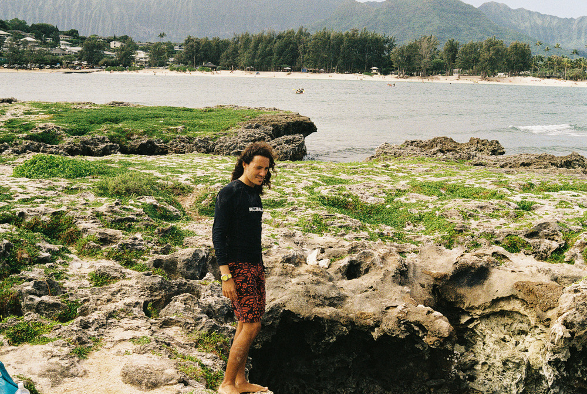
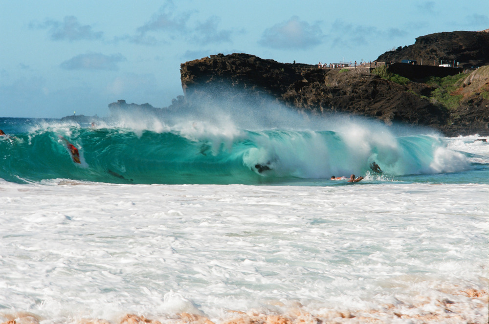

The first time I thought I was in love, I wasn't too introspective about it. I think I thought I was but — in retrospect — I was probably too young to really know the weight of of something like that. The second time I could have been in love, I was more introspective, and had more doubts. Not dissimilar to how one withholds judgement as they mature. The third time, however, I was certain.
It was a period of marked harmony, growth, peace of mind, and enjoyment. It was so good. It was the healthiest addiction, and I really miss it.
I can't wait to get tumbled again.
